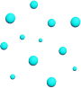

Notion
間、当事者化への提案
間とは何か、なぜいま要るのかを書いた MA Notion を読む。
私がこの場で何らかを綴ったなら、それはすでに個人的関心の枠をはみ出し相互理解を強要し始めるだろう。至論に留まってくれればいいのだが、簡単に暴論極論反論に取って代わる。怖い。そんな心緒を放出して何になるのか。無意味で括ってしまおうか。きっと、それは難しい。心の気づきに、気づく。そんな感覚を取り戻してしまうと、無意味という意味が遠くなっていく。処理にしか価値を見出せなかった、自分が少し懐かしい。これは私のリハビリ譚なのか。いや、通じ合いを求めた時点で意識は真面目な提案に傾き始めている。書くことは、覚悟を決めることなのだろう。提案の向こう側にはきっと、私が待ち望む結論も存在する筈だ。結論という言葉を選んではみたが、達成、共感、実現、成就その周辺であれば同義として通じるはずだ。言葉は強い力を持つが、その解釈は受け手の背景や状況に合わせ落とし所を見つけ出す。文章を書き留める際、以前はそんなニュアンスに強制力を持たせたい気持ちもあったが、今は読み手の脳や心の中で独自に育まれる正解に正確性があると定められるようになってきた。人らしい自由は、各々にあって、その反響が目の前で感受感情化され、一見複雑そうな記憶に組み込まれる。人は何かを受け、それを情と繋げ、それを振り子のように繰り返し自身を形成していく。人は、感じる生物なのだ。感じぬ存在は、果たして人と言えるのだろうか？少なくとも、私は「感じぬ人」だった。いつの間にか。自身すら捉えることも難しくなっていた。目の前を生きていただけだったのに。そんな当たり前をただただ傍観していた。自己喪失。感じぬとも、人は過ごせるのだ。
自身、春の淡い草原の様な軽やかな文体を所有してはいない。るんるん程度の塩梅がいいのだが。とても難しい。何を申し述べたいのか？本ドキュメントは決してネガティブなものではない。どこにでもいるおじさんの、葛藤・焦燥・着眼・構築を繰り返した5年ほどの自分探しの旅。等身大の日々に戸惑いや憂いを抱え、あーだこーだ歩みながら、霧を晴らすべく奮闘する。そんな中たまたま、転調を促す宝物の様な概念？ヒント？術？（以降転調材と明記）に辿り着き、それをお裾分けしてみたくなった。ぐらいの話である。ただ今思えば、そんな奮闘記の根には、良く食べ笑い寝たいがあった。単純に、より良く、生きたかったのだ。旅路は、当たり前の幸せの見つけ方を教えてくれた。私の真面目な提案に、起点を設けるならここしかない。より良く、生きる為には？私はストレートにここを問題提起したい。日々に戸惑い、時にはあしらわれ、それでも光の在処を探す、そんな人はきっと私だけではない筈だ。聞く耳は何処に？私の覚悟は、より多くの通じ合いを求め疼いている。点は時間をかけ線となり、その中は気づきであふれ今に至る。誰しもが投げかけなければ、始まらない。そんな問いに、あなたは何を感じますか？目の前を生きる全ての人へ。いざ、当たれ。
そもそもの発端は、なんだったのか。より良く、生きる。現在の私は少なからずこちらをはっきり標榜化している。しかも、それって思いのほか素晴らしいよと呼びかけるべくペンを執った。そんな提案の真価に影響を持たせたいなら、整理し届けるべきは以前だ。どのような過程を経てその境地に至ったか。その内容次第で、説得力の重みは如何様にも変わってくる。可能なら、無差別級を狙いたい訳で。確かに、私は「感じぬ人」であった。転調材を見つけるまで５年余りか、感じぬ周辺をうろうろし、完全体に向け進行を重ねていた。自論はこう畳みかける。故に、少々残念で心苦しい日々を送っていたと。なぜ、そんな行く末に。前提「感じぬ人」とは？ちょいと、分解を試みよう。人はわかる。ポピュラーで一般的な解釈で十分だろう。余計な含みはいらない。では、感じぬとは。広辞苑的には感じぬの明記はなく、さらには感じるとも異なり、感ずるが正確な日本語のようで、【刺激を受け止める・感覚を起こす・心に思う・心が動く】等と説明されている。この逆さの意味が妥当とすると、感じぬとは【刺激を受け止めない・感覚が起きない・心に思えない・心が動かない】となる。淡々とこう示されると、思い当たる節がぱんぱんと鳴る。言葉の可視化によって、理解に直感性が加わる。今となっては断言できるが、私は決して生まれつき「感じぬ人」だったわけではない。感ずるを知っていたからこそ、感じぬに気づけたのだ。恐らく表裏や白黒といったはっきりした区分ではなく、じっくりと鈍く錆びていったのだろう。変化に違和すら感じなかった。私の感受そして感情はいかに鈍化していったのか。
こういった対比はどうであろうか。鈍化のイメージ膨張に繋がるといいのだが。転調材を手に入れ、現在の自身が意識的に取り入れていること。感ずるよう努めていること。【花を飾る・日記を書く・夕飯の献立を考える・アルバムをフルで聞く・身なりを整える・季節を愛でる・昼寝・歩く・何もしない・感銘を探す・勉強・お参り・飲み会・運動・無駄話・目を保養する・人間関係・利他の意識・愛社精神・難しいに立ち向かう】等。ざっと出してみた。こう見るとやはり対価がわかりづらい、結果や効果の具体性が乏しい事象に寄っている気がする。何気ないことも含めると、随分日々も彩られた気がする。話を戻し、いざ比べてみる。感じぬ時代はどうであったか？確かにこれらをおざなりにしていた気がする。いやはや、むしろ余計なこと、介入すらない、それぐらいの立ち位置の行為であったと記憶は語る。感受感情の鈍化とは感ずる行為を徐々に手放していった経過と言えるのではないだろうか。
感ずるを放棄し、私はどうだったのか。随分と余裕がありそうだが。振り返ると真逆で、ゆとりなど全くなかった。心の中は棚や隅に置いたものだらけで正常に機能していたとは言い難い。常に、詰まっている・抑え込まれている・追われている、そんな状況がデフォルトだった。うっすら、どこかおかしい。私はそんな実情に釈然とすることもなく、小骨の様な引っかかりと、それを覆い隠す減ることのない焦りだけを募らせていた。些細なことでも積み重なれば慣れを過ぎ、現実は深刻になると憂いに変貌する。疲れが抜けない、成果幅が短い、どことなく優しくなれない、眠れない。目の前をただ流れる景色にすら、ピントが合わない感覚。結果、自分すら捉えられなくなっていくのであった。この状況が意地悪な点として、日常であるということだ。目の前を生き抜くためには、適合すべく反射し続けるしかない。喉元など過ぎる間もなく、暮らしは消費されていく。私は感受感情を意図的に手放したのではない。何かに押し出されていたのだ。そして何かは、何らかのやり方で私を「感じぬ人」に仕立てたのだった。
そんな折、私に発端が降りかかる。絶好とは言えずとも、強制力は抜群だった。SARS-CoV-2→コロナだ。未知なるパンデミックに全世界が強制ストップした。そのインパクトは絶大で、例に漏れず私も社会から断絶されることとなる。眉間にしわを寄せ深刻に事態を注視する。一方で全てが止まり木の様な時間に、なすがまま身を預けるタイミングだったようにも思えた。体は素直で、ボロボロを受け入れなくとも、休息を噛みしめた。ごまかしたとて、色々な意味で限界だったのだろう。私は、久方ぶりに良く寝て良く考えた。答えなど求めず自身と対話し、のんびり掘り下げていった。打つ手のない空気感が目の前とはっきりリンクしている感があった。なんとかしたいの気持ちは高まっていったが、現実は裏腹でこれという解は導き出せない。未曽有の災害も個人単位ではその威力はたかが知れていた。本質的かつ根本的な人間性を動かす程ではなかった。だが、この内省は小さな一歩を授けてくれる。自己を捉えられていないという明確な事実だ。自分のことがわからない。理解したい。把握とは、これほど難儀であったか。反応を促す筋肉の位置にすら戸惑う。自己の喪失をはっきりと認識した。それは、掴み戻したい契機となる。ジレンマが行動を呼び起こしたのだ。動き出す予感、発端が始まりに繋がった瞬間だった。私は、過去保持していたはずの自分を探してみようと思った。何が何を何した結果、今に至ったのか。そこから再生の術はあるのか。再生の先に待ち受けている世界とは。40過ぎのおじさんの自分探しという、字面すら目を背けたくなる決断。コロナ禍は、人を大胆かつ盲目にした側面もあるのかもしれない。より良く、生きる。この絶対的な標榜に辿り着くのは随分先となる。切符も栞も鞄もない旅。私は、なぜ「感じぬ人」となってしまったのか？最初の目的地は、その背景の在処だ。
決して望まれた展開ではないことは理解している。はやく転調材をよこせ。と言われても致し方ない。まさか、ただのおじさんの自分探しの旅に付き合わせることになるとは。青春時代のそれは、未来に自分の特性の在り方を模索する、どこか建設的であり光が見て取れる。不惑のそれとなると、私の場合だけかもしれないが、残念な雰囲気が拭えない。混沌化した目の前を正常化する。そのきっかけを求め、過去の残像を追いかける。本来の自分など実存したのだろうか。全くもって非合理的で生産性も担保されない、時代にそぐわない探求となる。そう言いきれるのは、時代を注視し苦悶に冒され続けた旅程の賜物だろう。
コロナによる強制STOP。スマホばかりいじっている場合じゃない。私は徐々に内省の範囲を拡張し、ここ10年程の記憶を遡り自身を紐解いていった。色んな事がありましたよ。これと言った、事件性はありませんが。誰しもの時の断片には、振り返る価値がある。この作業は、そう思わせる佇まいがあった。会社を経営しているからなのか、印象的な記憶の多くは仕事を介在していた。つい、思えば遠くへ来たもんだと歌いたくもなった。働くということは既存主義の大きな枠に組み込まれている。そこに特段疑問はない。当たり前に、時間の多くを献上している。個人差が生まれるとすれば、そこに意義を置くかどうかなのでは。置きたい人はきっと沢山いる。本当に置いているのか？そう聞かれると自信は萎む。生活の上に仕事があるのか。仕事の上に生活があるのか。そんな答えが右往左往しそうな自問も結局は宙に浮いたままだ。さてさて、肝心の何かの正体である。私から感受感情を奪い、「感じぬ人」へ誘った何かとは。こちらも大きな枠組みが作用していた。抗う、そんな短絡的なことではなく、働くこと同様どう向き合うかを問われるのであった。
デジタルイノベーション。もう少し踏み込めば、デジタルイノベーションの一般化。それが何かの正体であった。思わせぶりが恥ずかしくなる程、それぐらいしか思いつかなかった。平坦な気持ちで、当時の置かれていた状況を整理していく。整えは、意外にも複雑に向かうことなく、淡々と実務的に実情を浮き彫りにしてくれた。自浄努力では抗えない事象に焦点が合っていく。どこか予感はずっとあった。インターネット黎明期、電話回線の頃、不安を覚えた。物事が簡単で軽くなっている様に、これで大丈夫なのか？と。そんなことを思い出したりもした。当時似たような心持ちを抱いたのは自分だけではなかった筈だ。今、あの不安は手元の予感と相まって、一つの自論に向かおうとしている。地殻変動のような全体変化。特段疑いもなく全員が自然と潮流に乗る。音を立てずとも組み上がる果てしない枠。ここ10年で私が巻き込まれたそんな大きな扇情は、コロナ以外でデジタルイノベーションしか思い当たらなかった。神話の様な予定調和で凄まじいアップデートを繰り返し、地球にインストールを継続している。これら合理的生産性の追求が、人々の幸福の追求と同義であることは明白だ。既にその是非や功罪などはあらゆる角度で考察されているだろう。今更感もあるが、私はその革新が自分にどのような影響を与えたのか、じっくりと対話を繰り返した。どうやら平等な革新は、自己を駆逐する要素を多くはらんでいるようだった。その核心が朧気ながら見え始めた頃、無邪気に空を飛んでいたつもりが実は鳥かごの中にいた、そんな心境になったことを覚えている。大きなシステムに組み込まれるとは、このようなことなのだろう。特別なオープニングの演出など必要なく、エンドロールに名前が載ることもない。当然と言えば当然で、全員が同一に変化すれば、それは変化とは言えない。当たり前には、疑問をもつことすら難しい。だが、私は気づいた。多少、幸運だったのかもしれない。
デジタルイノベーション、私は自己喪失の真因をここに確信した。犯人を捕まえたというより、納得感の方が強かった。眩い恩恵にただただ導かれていたのだ。それに抗える程の意思は持ち合わせていなかった。なぜ、自分を捉えられなくなったのか。その階段を登る？下る？につれ、「感じぬ人」が立体化していく。思った以上に、ことは簡単ではなかった。それが、どうした。深呼吸。扉の向こうに、自分という存在を感じている。扉が重く、ままならないだけだ。きっとこの重みは、私だけが抱えているものではない。孤独な旅に、まだ見えぬ仲間がちらつく。一連の考察は、私などの器では、収まりきらないと確信が高まっていく。「感じぬ人」となったのは私だけではない。感受感情の蓋、その重圧は社会や地域何より誰それの目の前に負荷を与えているのでは。不惑の自分探しは、ひょっとすると誰かの未来に繋がっているのかもしれない。まずは、デジタルイノベーションって？そもそもの自論を紡いでみた。その解説にはいろう。
掘る。最近はディグるというらしい。私は、私なりにデジタルイノベーションをせこせことディグっていた。コロナ禍、とりとめのない検討をしながら誰もいない街をよく歩いていた。敢えてというか、自前の脳をぐるぐるさせることに拘った。検索は勿論のこと、リアルな参考文献含め距離を置いた。一般的な理解ではなく、急がず自前の答えを掘り当てることが今回の場合は暗黙であると了解した。これが、中々難解ですぐにスマホに手が伸びそうになる。正確に把握することが目的ではない。影響を遮断しなければ、探し求めるかつての自己が逃げていく。そんな気がした。デジタルとは？アナログとは？変化の意味とは？革新の真実とは？暗中模索の中、様々なプロットが浮かんでは消える。何本骨が折れたことか、ようやく考察のスタート地点が姿をみせる。私の癖なのか、ここからは速い。面白いもので、着想が姿を見せるとこれまでの検討がシナプスのように繋がり出す。そういうことかと、理解も後を追う。興奮気味に冷静沈着なおおよその自論がまとまっていく。この時点で、旅は折り返し地点を迎えようとしていた。まだ見えぬ目的地には、辿り着けるのだろうか。
ある日賢者の誘導の下、全員に未知なる性能のお揃いの箱が配られた。皆でその箱へ、知ってること知って欲しいこと、有象無象な情報の積み込み作業が暗示される。箱は無限に大きくなるようだ。性能は磨かれ続け、収まらない情報などない。またある日、どんな矛盾か箱は手持ちサイズに深化し翼を生やすことに。現在箱は、待ちの姿勢から打って変わって人格を手に入れ、能動性を獲得した。結果、全員参加で育成する世界一優秀な第三者的ポジションを確立する。ざっくり纏めるとこんなイメージ。こんなことが目を見張る速度で枠組み化していった。デジタルを取り巻く手段・手法は、一見使う・使わないの選択の自由がありそうだが、社会が万遍なく取り入れる意思を示したことで、使わない判断者は脱落や落伍はたまた不適合に近い位置づけとなり、完全に我々はデジタルに掌握されることとなる。その浸透に関しても、これまた物凄い速度で取り込まれていく。めでたくアナログの世界に生息していた者たちは、仮想空間とは言い得て妙で、まさに数字羅列のみで構成された実体も果てもない箱の住民ともなったのだ。デジタルがもたらす様々なドーピング的恩恵を考えれば、この舵取りにとやかく言うのは野暮が過ぎる。決して各人のCPUの性能が良くなる訳ではないが、間接的に我々は自己のポテンシャルを何倍にも飛躍させることに成功したのだから。度重なるイノベーションは空回りするどころか、示し合わせたかの如く適合していく。Googleをはじめとした幾つかしかないデジタルインフラ供給企業の創造性には本音で舌を巻く。このインフラ王者がごく限られている点は、普及発展スパイラルを太くしただけではなく、デジタル情報が妄信的な信用信頼を勝ち得た一助を担っていると考える。インフラは、それが当然で疑う余地がないことで機能しうるのだから。そんなシナリオの中、数々の恩恵に湧くアナログ人間たちはどう立ち回ったのか。かつての自己を探し掘る中、私が特筆事項と推察したのは、正解率だ。デジタルイノベーションは、人々の目的に紐づく行動の精度を圧倒的に向上させた。人々は、概ね間違わなくなった＝概ね正解し続けることがセオリーとなるフェイズへ移行したのではないだろうか。デジタル情報が裏付けを突き詰めていない、概ね・おおよそ→最大公約数的な正解ばかりな事実も秀逸で、判断の責任を和らげてくれる。そんな効果もこの移行に一役買ってくれている点は特記しておく。
以下おおよその正解を手に入れた行動イメージである。至極、簡単な話である。目的は行動を決め、行動が正否を左右する。例えば、明日急遽仕事で外出となったとする。この場合、大方の目的をざっくり快適な外出としよう。以下それを実現するための行動とする。
【契機】→明日急遽外出に
【目的】→快適な外出
【行動】→A天気大丈夫かな
1天気調査 ☞ 2 雨予報 ☞ 3傘準備
【結果】→雨にも当たらず無事に商談をこなす
といった具合だ。一見何のことない行動に見えるが、行動１の正解率次第で分岐は如何様にも変動する。イノベーション前はどうだったであろうか。人に聞く・自宅に帰りニュースを確認する・自分で空を見るなど。いずれも、不安定な正解率だけではなく、行動に制約も生じやすかった。現在では、スマホを覗けば気象庁を含め雲の動きから何時何分にこれくらいの降水量が想定されるといった、情報が秒で手元に。次が読めない状況は、失敗と隣り合わせだ。立止り、出戻り、振返りといった手数をどんどん増やす。デジタルは見事にこの淀みを取っ払う。確実に一手一手おおよその正解を提示し、行動を一直線に導いてくれるのだ。疑わない・迷わない・間違わない。そんなリズムに乗りさえすれば、特段行動につまずきが発生することはない。実に、合理的だ。何より、そのリズムは光速で刻まれる。まさにスピードは、フィジカル性を有する必要がないデジタルがもたらす恩恵の真骨頂である。液晶の向こう側の情報はぎゅうぎゅうで溢れそうだ。そこに興味・関心さえ投げれば、概ね理想の正解が手に入る。このかけ合わせが、揺ぎ無い精度の行動を実践させてくれる。デジタルは、私たちをよりおおよそ正解する人に仕上げてくれたのだ。正解の効果は、合理的な目的達成に留まらない。イノベーションは、次に生産性を喚起する。これまで失敗に掛かっていた工数を、新たな目的に割り当てることに目をつけたのだ。より行動をスムーズにすべく、インフラ・ソフト・ハードが連携してサポートを約束してくれる。では、生産性が向上するとどうなるのか。本ケースにおける目的と行動のイメージをご覧頂きたい。発端は同じく、明日仕事で外出となったとする。
【契機】→明日急遽外出に
【目的】→快適な外出
【行動】→A天気大丈夫かな
1天気調査 ☞ 2 雨予報 ☞ 3傘準備
B移動時間が長そうだ
1路線情報調査 ☞ 2 到着時間把握 ☞ 3家出発時間決定 ☞ 4直行申請
C取引先の近くでお昼を
1ランチ調査 ☞ 2 ラーメンに ☞ 3店舗一覧 ☞ 4口コミ ☞ 5メニュー
【結果】→雨にも当たらず予定通り最寄り駅に到着し、無事に商談をこなし帰社途中、
美味しい醤油ラーメンにありつけた。
このように目的はより充実した達成項目を設け、行動はおおよその正解を担保に増え続ける。やっかいなのは目的がもたらす満足のインフレかも知れない。一本を装う道は本能的に行動の束でみるみる太くなっていく。限界値はどこなのだろうか。見えそうで見えない。このことは、革新の飽くなき継続を断定している。継続の一環として、さらなる文脈も生まれる。革新は多くの人々の目的なき時間も手玉に取りはじめるのだ。あらゆるジャンルの情報を際限なく露出させることで、受動的にそれらに触れる機会を多発させる。興味・関心の出発点を人間側にではなく情報側に誘致し、さも知りたかったことのように魅せる。行動予測のアルゴリズムはより的確で鮮やかな煽りを仕掛けてくる。ただのなんてことのない時間にも正否がインクルードされるのだ。音楽しかり映像しかり食べ物しかり。手の届く範囲は、たちまちおおよその正解で満ちていった。この行動原則は決定事項のように、多くの人のデフォルトとなる。需要と供給のバランスも良く、情報の提供側と受取側が一方通行のケースは淘汰され、必要なものだけが生き残った。つまり、市場経済とぴったり連動しているのだ。経済発展は終わることのない革新と比例関係にあり、このことは社会及びそれに帰属する人間の幸福尺度との強い連動を意味する。
おいおいおいと、畳みかけるような文字運びになってしまい、これまた抜けない癖が。大きく息を吐く。ここまでを端的にまとめてみる。デジタルイノベーションは想像を超え、とんでもなかった。私たちの目の前をその成果で、おおよその正解で溢れるようにしてくれた。そんな最大公約数に見守られた正解は、個人単位での生産合理性を極限まで高め、複合的な行動を同時かつ高精度で執り行うことを叶えた。満足や幸せという軸をぶらさずに。まさに天晴である。だけども、だけども。私はそんな完成度の高い世界で自己という落とし物をしてしまう。それこそデジタルに聞いてみれば、光の速さで解決してくれるのでは。どんなことにも光と影が交差するのが世の常、的な主張をしたい訳ではない。自身も革新のレールにしっかりと乗り、肩を組み共に進んできた自覚はある。巻き込まれたと被害者面すれば、私の主張が正当化されるわけでもない。目の前に真実は一つしかない。因果関係を紐解けばいいのだ。抗うのではなく、ありのままを正視する。本筋がぼんやり透き通ってくる。何かが何をしたのか。おおよその真実を捕まえたようだ。
核となる二項 " 密 " と " 間 "
「圧縮された言葉と、空間として残された言葉」
間は、言葉として確定した密の対極にある。
密がぎゅうぎゅうに圧縮された言葉なら、
間はばらけて空間に浮かぶ言葉。
論理と感覚、この両極を往復できるよう設計された装置は、全て「間」の概念から生まれている。

論理 ⇄ 感覚spectrum同じ言葉でも、
密度と余白で意味の振る舞いが変わる。
間を定める、広める、感化する
間は三段階で構成される。
MA Lab で間を定義化し、MA Channel で流通させ社会に広めていき、MA Do で暮らしの中に装置として埋め込むことで、個人を感化させていく。
動詞の階段が、受け手の状態変化に対応する。
暮らしへの
インストール
-
Lab (間の定義化)“定める”
- Dictionary
- Reference
- Research
-
Channel (間の流通化)“広める”
- TV
- Magazine
- Radio
-
Do (間の個人化)“感化する”
- Device
- Tips
We create of Your MA =Lab × Ch × DoNotion